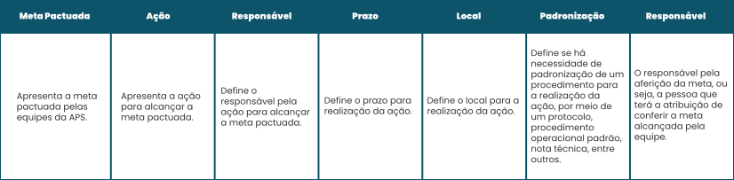

TÓPICO 3
OPERACIONALIZAÇÃO DA PROGRAMAÇÃO EM SAÚDE NA APS
TÓPICO 3
OPERACIONALIZAÇÃO DA PROGRAMAÇÃO EM SAÚDE NA APS
Veja um exemplo de matriz de implementação das metas pactuadas pelas equipes da Atenção Primária à Saúde para a atenção programada.
